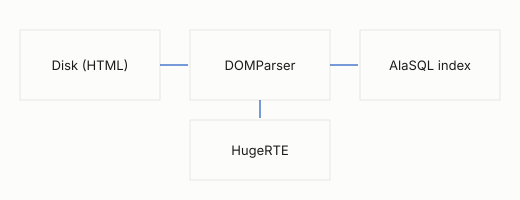

Deliverables & Metrics
Project Delta replaces the vendor-hosted note store with a local-first pipeline: files on disk, an index rebuilt at launch, and templates that own every pixel of presentation.
Architecture
The read path is a straight line — disk bytes, DOMParser, transient index, editor.

Cost model
Indexing cost grows linearly with the note count, and the parse dominates:
$$T_{index} = n \cdot (t_{read} + t_{parse}) + \sum_{i=1}^{n} t_{meta}(i)$$
With n = 2,000 notes and a mean parse of 0.4 ms, a cold scan lands under one second.
Acceptance criteria
| Metric | Target | Status |
|---|---|---|
| Cold index (2k notes) | < 1200 ms | met |
| Save round-trip | < 80 ms | met |
| Inline styles written to disk | 0 | met |
| Network requests after boot | 0 | met |
Open questions
- Should bundle renames rewrite inbound relative links automatically?
- Do we expose
note_tagsto template modules, or keep it read-only?
If the application dies, the files remain universally readable.